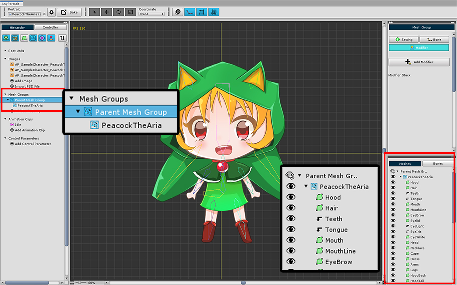
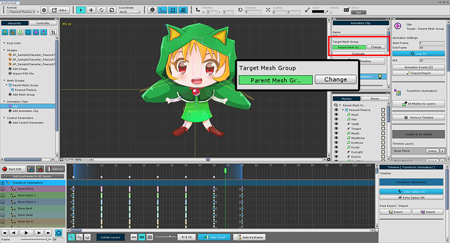
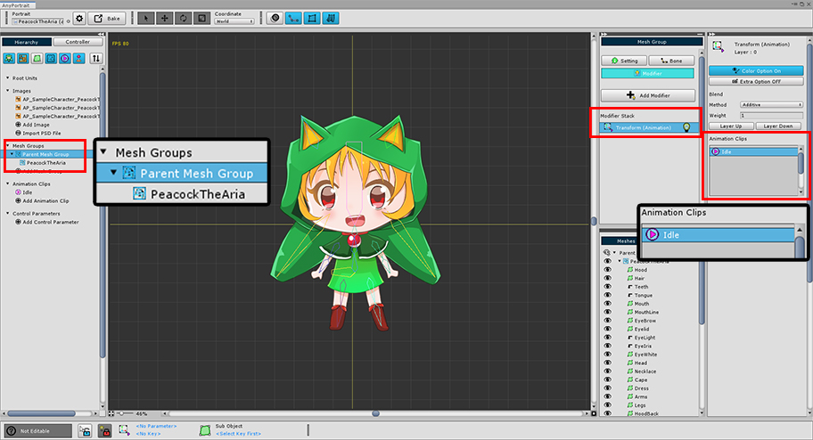

AnyPortrait > Manual > Animation Issue with a child mesh group
Animation Issue with a child mesh group
1.1.8
A Mesh group can be controlled by registering another mesh group as a child.
This feature is very convenient, but can sometimes cause some problems.
A typical case is that the animation does not run properly.
This problem occurs when an animation clip is associated with a child mesh group.
AnyPortrait animation clips are only valid when their target is the Root Unit. Any animation of a child mesh group that cannot be the Root Unit is ignored on Bake.
Therefore, in principle, animation clips cannot target child mesh groups.
However, there can be "child mesh groups associated with animation clips" in the following order:
1) Add an Animation Modifier to the mesh group, create an animation clip, and connect it.
2) Register the animated mesh group as a child of another mesh group.
If you have already created an animation and registered the target mesh group as a child of another mesh group,
the animation you created will not be a Bake target and will not run normally.
In v1.1.8, the feature to retain animation data when changing the animation target to "Parent Mesh Group" has been added.
This page covers the situation where the problem occurs and how to fix it.

This is a common example of how animation is produced.
The Transform (Animation) Modifier is registered in the mesh group, and an animation named "Idle" has been created.

Let's create a Parent Mesh Group.
(1) Create a new Mesh Group named "Parent Mesh Group".
(2) Press the "+" button.
(3) Select the Mesh Group tab.
(4) Select the original mesh group where the animation is made.
(5) Press the Add button.

A warning message appears when adding as a child mesh group
This message is related to the "Animated Child Mesh Group" above.
(If you do not want to register as a child mesh group at this step, you can run Detach to exclude it from the child mesh group.)

An existing mesh group has been registered as a child mesh group of "Parent Mesh Group".

When you select an Animation Clip, the setting of Target Mesh Group turns red with the text "Invalid Mesh Group".
This is because the target mesh group is a "child mesh group".
This animation clip is not subject to Bake, and editing may not be properly.

Let's transfer this animation data to our parent "Parent Mesh Group".
(1) Press the Change button.
(2) Select the parent mesh group of the current mesh group from the mesh group list. This is called "Parent Mesh Group".
(3) Press the Select button.
(4) A message appears asking if you want to change the Target Mesh Group while the animation data is preserved. Press the Keep data button.

The target mesh group for the animation has been changed to the parent mesh group.
Animation data are retained, so It will be edited and played back normally.
Caution
Unless you switch from a child mesh group to a parent mesh group, the animation is initialized when you change the target mesh group.

If you select the parent mesh group, you will see that a "Transform (Animation)" modifier has been created automatically, and an "Idle" animation clip has been registered.